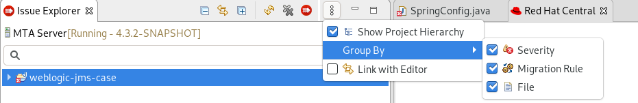

IDE Plugin Guide
Making open source more inclusive
Red Hat is committed to replacing problematic language in our code, documentation, and web properties. We are beginning with these four terms: master, slave, blacklist, and whitelist. Because of the enormity of this endeavor, these changes will be implemented gradually over several upcoming releases. For more details, see our CTO Chris Wright’s message.
1. Introduction
1.1. About the IDE Plugin Guide
This guide is for engineers, consultants, and others who want to use the IDE plugin for the Migration Toolkit for Applications (MTA) to assist with migrating applications.
|
Note
|
This guide uses Eclipse to refer to an installation of Eclipse or Red Hat CodeReady Studio. |
1.2. About the Migration Toolkit for Applications
What is the Migration Toolkit for Applications?
The Migration Toolkit for Applications (MTA) is an extensible and customizable rule-based tool that simplifies the migration and modernization of Java applications.
MTA examines application artifacts, including project source directories and application archives, and then produces an HTML report highlighting areas needing changes. MTA supports many migration paths including the following examples:
-
Migrating from enterprise application servers to Red Hat JBoss Enterprise Application Platform
-
Containerizing applications and making them cloud-ready
-
Migrating from Spring Boot to Quarkus
-
Updating OpenJDK versions
For more information about use cases and migration paths, see the MTA for developers web page.
How does the Migration Toolkit for Applications simplify migration?
The Migration Toolkit for Applications looks for common resources and known trouble spots when migrating applications. It provides a high-level view of the technologies used by the application.
MTA generates a detailed report evaluating a migration or modernization path. This report can help you to estimate the effort required for large-scale projects and to reduce the work involved.
How do I learn more?
See the Introduction to the Migration Toolkit for Applications to learn more about the features, supported configurations, system requirements, and available tools in the Migration Toolkit for Applications.
1.3. About the IDE plugin
The IDE plugin for the Migration Toolkit for Applications provides assistance directly in Eclipse and Red Hat CodeReady Studio for developers making changes for a migration or modernization effort. It analyzes your projects using MTA, marks migration issues in the source code, provides guidance to fix the issues, and offers automatic code replacement when possible.
There is an MTA extension for Visual Studio Code and Eclipse Che. The extension is only available as a Minimum Viable Product and will be fully documented and supported in a future Release of MTA. For more information about the extension, visit the Visual Studio Marketplace.
For more information on using the IDE plugin, see the MTA Eclipse and Red Hat CodeReady Studio Plugin Guide.
The IDE plugin has been tested with the Eclipse IDE for Java Enterprise Developers 2020-09 R and Red Hat CodeReady Studio 12.15.
-
Red Hat CodeReady Studio or Eclipse IDE for Java Enterprise Developers 2020-09 R
-
JBoss Tools
Install the Eclipse Marketplace Client. Browse to JBoss Tools in the Client and then install the JBoss Tools. For more information, navigate to Eclipse.org, click More → Documentation, and select the Eclipse Marketplace User Guide.
-
If you are installing on macOS, the value of
maxprocmust be2048or greater.
-
Launch the IDE.
-
From the menu bar, select Help → Install New Software.
-
Next to the Work with field, click Add.
-
In the Name field, enter
MTA. -
Select all the JBoss Tools - MTA check boxes and click Next.
-
Review the installation details and click Next.
-
Accept the terms of the license agreement and click Finish to install the plugin.
-
Restart the IDE for the changes to take effect.
2. Installing in a disconnected environment
You can install the IDE plugin in a disconnected environment.
The IDE plugin has been tested with the Eclipse IDE for Java Enterprise Developers 2020-09 R and Red Hat CodeReady Studio 12.15.
-
Red Hat CodeReady Studio or Eclipse IDE for Java Enterprise Developers 2020-09 R
-
JBoss Tools
Install the Eclipse Marketplace Client. Browse to JBoss Tools in the Client and then install the JBoss Tools. For more information, navigate to Eclipse.org, click More → Documentation, and select the Eclipse Marketplace User Guide.
-
If you are installing on macOS, the value of
maxprocmust be2048or greater.
-
Navigate to the Migration Toolkit for Applications download site and download the
migrationtoolkit-mta-eclipse-plugin-repositoryfile. -
Launch the IDE.
-
From the menu bar, select Help → Install New Software.
-
Next to the Work with field, click Add.
-
In the Name field, enter
MTA. -
Next to the Location field, click Archive.
-
Select the
migrationtoolkit-mta-eclipse-plugin-repositoryfile and click OK. -
Select all the JBoss Tools - MTA check boxes and click Next.
-
Review the installation details and click Next.
-
Accept the terms of the license agreement and click Finish to install the plugin.
-
Restart the IDE for the changes to take effect.
3. Accessing the MTA tools
After the plugin is installed, you can view the MTA tools in the MTA perspective.
-
Navigate to Window → Perspective → Open Perspective → Other.
-
Select MTA and click OK.
Review the plugin components and then get started identifying and resolving migration issues.
For more information, click Help → Getting Started.
3.1. About IDE plugin components
The following components are available in the MTA perspective when using the IDE plugin to analyze projects.
- Issue Explorer
-
This view allows you to explore the MTA issues for projects that have been analyzed.
If this view is not visible in the MTA perspective, you can open it by selecting Window → Show View → Issue Explorer.
- MTA Server
-
The MTA server is a separate process that executes the MTA analysis, flags the migration issues, and generates the reports.
You can start, stop, and view the status of the MTA server from Issue Explorer.
- Issue Details
-
This view shows detailed information about the selected MTA issue, including the hint, severity, and any additional resources.
If this view is not visible in the MTA perspective, you can open it by selecting Window → Show View → Issue Details.
- MTA Report
-
This view shows the HTML reports that are generated when MTA is executed. From the report landing page you can navigate to detailed reports, such as Application Details, Issues, and Dependencies.
Note that the MTA run configuration used must have the Generate Report option selected in order for MTA reports to be generated.
If this view is not visible in the MTA perspective, you can open it by selecting Window → Show View → MTA Report.
4. Using the MTA IDE plugin
4.1. Analyzing your projects with the MTA IDE plugin
You can analyze your projects, review the analysis, and resolve issues using the IDE plugin.
-
Import the projects to analyze into your IDE.
-
Create a run configuration. In the Issue Explorer, click the MTA icon (
 ).
). -
Select the projects to analyze and the options to add to the analysis. Options are described in the table at the end of this section.
-
Click Run to execute MTA.
MTA populates the Issue Explorer with migration issues.
-
Review and resolve issues by manually updating code or by using quick fixes when available.
-
Run MTA again as necessary.
| Option | Description |
|---|---|
Input |
|
Migration Path |
Determines which MTA rulesets are used. Default = Anything to EAP 7 |
Projects |
Projects to analyze. Hold the Ctrl key to select multiple projects. |
Packages |
Select one or more packages in the projects to scan. Hold the Ctrl key to select multiple packages. If no packages are selected, all packages will be scanned. |
Options |
|
Report |
Select Generate Report to generate the MTA HTML report. The report appears in the MTA Report tab and in the Issue Explorer when you group by File. |
Options |
Set additional MTA options. Set |
Rules |
|
Custom Rules Repositories |
Select custom rulesets to include during analysis if you have imported or created any custom MTA rules in the IDE plugin. |
4.1.1. Reviewing migration issues
Use the Issue Explorer to review migration issues identified by the . Different icons indicate an issue’s severity and state.
Change how issues are grouped by adjusting the Group By selections: Severity, Migration Rule, and File.

-
Double-click an MTA issue in Issue Explorer to open the associated line of code in an editor.
-
Right-click and select Issue Details to view information about the MTA issue, including its severity and how to address it.
| Icon | Description |
|---|---|
The issue must be fixed for a successful migration. |
|
The issue is optional to fix for migration. |
|
The issue might be an issue during migration. |
|
The issue was resolved. |
|
The issue is stale. The code marked as an issue was modified since the last time that MTA identified it as an issue. |
|
A quick fix is available for this issue, which is mandatory to fix for a successful migration. |
|
A quick fix is available for this issue, which is optional to fix for migration. |
|
A quick fix is available for this issue, which may potentially be an issue during migration. |
4.1.2. Resolving MTA issues
You can resolve MTA issues by updating the code manually or by applying a quick fix, if available.
Resolving an issue manually
-
Review the MTA issue details and additional resources.
-
Update the source code as necessary.
MTA marks the issue with the stale icon () until the next time that MTA is run on the project.
Marking an issue as fixed
You can also manually mark an MTA issue as fixed without updating the source code.
-
Right-click the MTA issue in Issue Explorer and select Mark as Fixed.
MTA marks the issue with the resolved icon () until the next time that MTA is run on the project.
Resolving an issue using a quick fix
Some MTA issues provide a quick fix, which assists in making the necessary edits to address the issue. The following icons indicate that a quick fix is available for an issue as well as the severity of the issue:
| Icon | Description |
|---|---|
A quick fix is available for this issue, which is mandatory to fix for a successful migration. |
|
A quick fix is available for this issue, which is optional to fix for migration. |
|
A quick fix is available for this issue, which may potentially be an issue during migration. |
Previewing a quick fix
-
Right-click an issue and select Preview Quick Fix.
-
After you review the suggested fix, you can apply it.
Applying a quick fix
-
Right-click an issue and select Apply Quick Fix.
MTA updates the source code as required and marks the MTA issue as resolved.
5. Adding custom rules
By default, the IDE plugin comes with a core set of system rules for identifying migration and modernization issues. You can browse the existing rules from the IDE plugin.
You can create your own rules for identifying issues specific to your applications. You can either import an existing custom ruleset or create a custom ruleset directly in the IDE plugin.
5.1. Browsing rules
You can view both system and custom rules from the IDE plugin.
-
From the MTA perspective, open the Rulesets tab.
-
Expand the System item to view core system rules, or expand the Custom item to view custom rules.
NoteIn order to view system rules, the MTA server must be started. -
Expand the ruleset containing the rule you want to review.
-
Double-click the rule to open the rule in a viewer. You can select the Source tab to view the XML source of the rule.
5.2. Importing a custom ruleset
You can import an existing custom ruleset into the IDE plugin to use during analysis of your projects.
-
From the MTA perspective, open the Rulesets tab.
-
Click the import ruleset icon ().
-
Browse to and select the XML rule file to import.
NoteThe XML rule file must use the .windup.xmlor.mta.xmlextension in order to be recognized as an MTA rule. -
The custom ruleset is now shown under the Custom item in the Rulesets tab.
This custom ruleset can now be selected in run configurations when analyzing projects.
See the Rules Development Guide to learn more about creating custom XML rules.
5.3. Creating a custom ruleset
You can create a new custom ruleset in the IDE plugin to use during analysis of your projects.
-
From the MTA perspective, open the Rulesets tab.
-
Click the create ruleset icon ().
-
Select the project and directory to save the new ruleset in.
-
Enter the file name for the ruleset file.
NoteThe XML rule file must use the .windup.xmlor.mta.xmlextension in order to be recognized as an MTA rule. -
Enter a ruleset ID, for example,
my-ruleset-id. -
Optionally, check the Generate quickstart template checkbox to add basic rule templates to the ruleset file.
-
Select Finish.
-
The new ruleset file opens in an editor and you can add and edit rules in the file. You can also select the Source tab to edit the XML source for the ruleset file.
This new ruleset can now be selected in run configurations when analyzing projects.
See the Rules Development Guide to learn more about creating custom XML rules.
5.4. Submitting a custom ruleset
You can submit your custom ruleset for inclusion in the official MTA rule repository. This allows your custom rules to be reviewed and included in subsequent releases of MTA, enhancing the applications and server configurations that MTA analyzes.
-
From the MTA perspective, click the Rulesets tab.
-
Click the dropdown icon () and select Submit Ruleset.
-
Complete the following fields:
-
Summary: Describe the purpose of the rule. This becomes the title of the submission.
-
Code Sample: Enter an example of source code that the rule should run against.
-
Click Choose Files and navigate to the saved rule to attach it.
-
Description: Enter a brief description of the rule.
-
-
Click Submit.
Revised on 2021-07-11 19:39:32 CDT